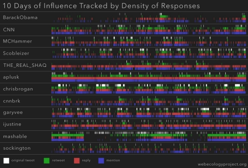
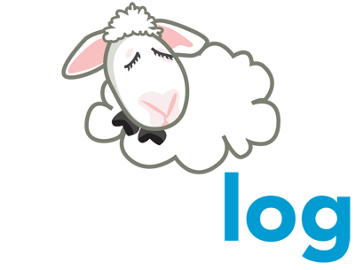
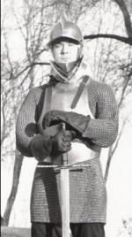

Seth
Wolfwood
§ Computer Education
Computers can make education better. There is already powerful educational software that takes advantage of the medium of computers for logical thinking, science, engineering and technology. And programs like One Laptop per Child are working on computer access, and to some degree software enviroments for education.
But there aren't enough rich enviroments for the humanities, reading comprehension, or literature. These are the problems I want to work on. Especially in combination with my work in archiving public domain content and making that content available.
One Laptop per Child
The One Laptop per Child OLPC project that produced an inexpensive laptop designed for children in developing countries. Initially, I volunteered with OLPC in 02005, curating Open Educational Resources.
In I moved to Boston to work for OLPC full time, continuing my work on OER, and eventually writing software, running media and shipping logistics for the Give One Get One campaign in 02009, and managing/editing the OLPC/Sugar manual.
I no longer work for OLPC, but I do work on projects such as: the Sugar Learning Platform, and the Pathagar book server.

§ OneVille Project, HGSE
The OneVille Project was a two-year Ford funded initiative out of the Harvard Graduate School of Education. Primary Investigator Mica Pollock founded the project to understand what communications are required between which of a student's supporters are required to support that student.
I worked on the OneVille project from 02009-02010, first as an advisor and technologist, and later as the Project Manager.
§ Digital Archival
Books, images and other resources that are out of copyright no longer belong to their original authors, editors or photographers. They belong to all of us. The curation and archival in the digital domain is important, and not enough people are working to make these cultural resources available.
Some of the this content
So when I find a resource that can be preserved, I preserve it.
Here is a short summary of materials I have archived via web scraping and often, polite emails to website maintainers.
§ Archive Log
Encyclopedia Dramatica -- over 9000 pages archived
CDC Public Health Image Library -- 15,000 hi-res public domain images
Open Educational Resources
Public domain works are an important part of creativity and generativity on the internet and elsewhere. US government produced works are in the public domain, but not always easy to access. Taking initiative from projects like public.resource.org I took it upon myself to index, archive, and re-publish a 30,000+ image library from the CDC.

My version of the repository is a preliminary step. Next steps are a better full-text and metadata search function and to upload the images and metadata to Wikimedia Commons and Archive.org.
Twitter: Iran Election 02009 -- 2 million tweets in four langauges
Twitter: Afghanistan Election 02009 -- 500,000 tweets in six langauges
Project Gutenberg -- 38,000 books, now collaboratively edited on Github
Hathi Trust -- 240,000 public domain journal divs and published books
Web Ecology Project
The Web Ecology Project was a research collective based in Cambridge, Massachusetts. Our agenda was to apply quantitative social science to social media.
We released our first report June 02009, The Iranian Election on Twitter: The First Eighteen Days. In this report we analysed over two million tweets collected in a 19 day window during the events of the Iran election and subsiquent protests. This report, and all subsiquent reports have been released under a Creative Commons license.
As a part of Web Ecology, I wrote software to collect and analyse data from various social networks. As the systems administrator, I managed a cluster of GNU/Linux servers running postgres and mysql databases numbering in the hundreds of millions. As part of the research team, I prepared qualitative analysis for published reports, and as business manager I produced research funding proposals, attended conferences, and pursued commercial contracts.
Further research has been released exploring influence in social networks and competition among group consensus in online platforms to media acclaim.
Free and open source software
The number of things that you can do with a computer is stunning. Contrawise, the number of things you need a computer for is staggering. I am concerned about software being a barrier on access to computing. For this reason, and a host of others, I support free and open source software (FOSS).
I support FOSS by using free software, by donating to FOSS projects, by contributing to existing software projects, and by releasing the software I write under Free Software licenses.
Yawnlog
YawnLog is a social sleep tracker originally built over a 24.5 hour hackathon. The app was launched with a hyperbolic press release on Feb 22nd 02009 and a plan to a throw a party if/when we hit 100 users. We wokeup to 200, things got silly from there.
We started getting press and links the day of launch, a solid review from Killer Startups, an article in ReadWriteWeb, an episode of the Chris Pirillo show, and a mention by the New York Times.
Development of the Ruby on Rails site continues and the user base is well over 9000.
Interests
Librivox is a collection of audio books read by volunteers and released into the public domain. It was founded in August 02005 and I joined the group in January 02006. I am proud to have read, recorded and submitted a few audio books, mostly poetry and few book chapters.
I study and practice 15c. German longsword. There are a large collection of extant manuscripts from the 01300's until the modern day, describing the use of swords and other weapons as a Western Martial Art. I practice in the Liechtenauer tradition, but other schools exist, some of which I've dabbled in.
I was a part of an organization that performed educational demonstrations on medieval and renaissance martial arts, arms and armor. We performed at schools, libraries, and museums throughout the pacific northwest, notably the Seattle Art Museum's Spain in the Age of Exploration exhibit in 02004.
Stage combat and performance is a big part of demonstrations like this. I've had the opportunity to act and perform stage combat on a few occasions, one of which resulted in an imdb entry.